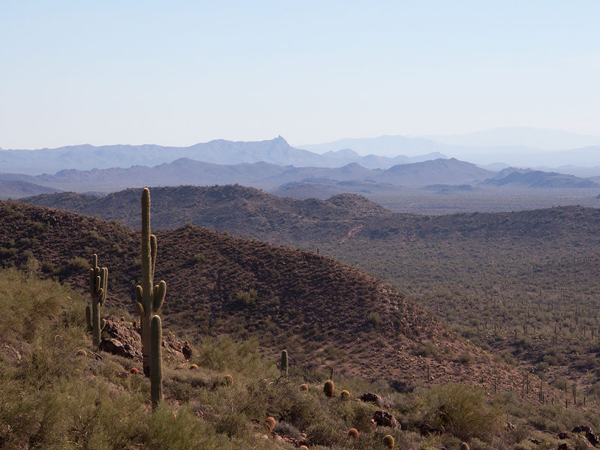
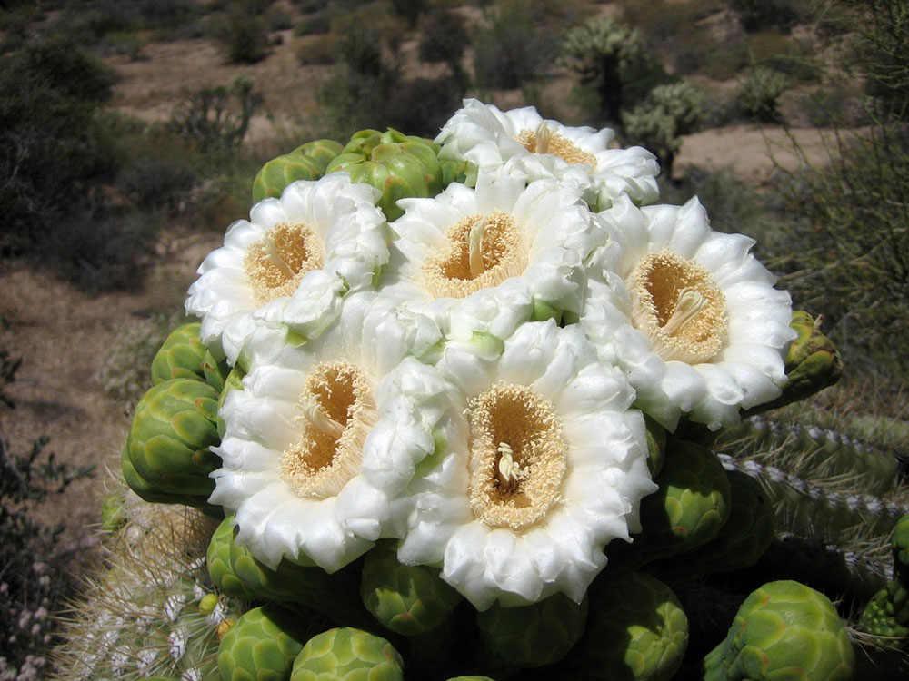

District of Saguaro National Park with dense saguaro forests, scenic drives, and desert petroglyphs.
General Information
- Hours:
- Open daily from sunrise to sunset for vehicle access. Visitors may walk or bike into the district 24 hours a day.
Red Hills Visitor Center: generally 9am to 5pm daily - Fees:
- Private Vehicle: $25 (valid for 7 consecutive days)
Motorcycle: $20
Pedestrian/Bicycle: $15 per person - Pet Policy:
- Pets are allowed only on roadways and in designated parking and picnic areas. Pets are not permitted on trails or inside the visitor center and must be leashed at all times.
- Closest cities with hotels:
- Tucson, AZ (adjacent to the park, about 15 miles from downtown)
- Seasons:
- Open year-round; best visited from October through April when temperatures are milder
Spring wildflowers late February to April; saguaros bloom late April to June
Summer highs often exceed 100°F - Location:
- Red Hills Visitor Center, 2700 N Kinney Rd, Tucson, AZ 85743
- Website:
- nps.gov/sagu
How to Get There
From Tucson, AZ (15 mi): Take I-10 to Speedway Boulevard or Grant Road, head west to Kinney Road, then follow Kinney Road north to the Red Hills Visitor Center and Tucson Mountain District entrance of Saguaro National Park.
Overview
The Tucson Mountain District, often called Saguaro West, is the western unit of Saguaro National Park, located about 10 to 15 miles west of downtown Tucson. Lower in elevation and drier than the Rincon Mountain District on the opposite side of the city, it protects some of the densest stands of saguaro cactus in the world, with thousands of the towering, many-armed cacti covering the rocky slopes and broad bajadas of the Tucson Mountains.
Visitors come here for the classic Sonoran Desert scenery that defines the American Southwest: forests of giant saguaros framed by rugged volcanic peaks, colorful desert sunsets and spring wildflowers. The district is compact and easy to explore in a half day, with a scenic drive, short nature walks, centuries-old Hohokam petroglyphs and longer trails that climb to Wasson Peak, at 4,687 feet the highest point in the Tucson Mountains. Its location next to the Arizona-Sonora Desert Museum and Tucson Mountain Park makes it an easy addition to any Tucson visit.
Sightseeing and Scenic Drives
The district’s main scenic drive is the Bajada Loop Drive, a roughly 6-mile graded dirt road that winds through some of the thickest saguaro forest in the park and is generally suitable for passenger cars. Along the way, pull-offs and trailheads lead to the Valley View Overlook, with sweeping views over Avra Valley, and the Signal Hill picnic area, where a short path climbs to a hilltop covered with Hohokam petroglyphs roughly 800 years old. The district has about 12 miles of paved roads and about 8.5 miles of unpaved roads, including Golden Gate Road, and the stone picnic ramadas and restrooms built by the Civilian Conservation Corps in the 1930s are scattered throughout. Just south of the district, the drive over nearby Gates Pass in Tucson Mountain Park is one of the most popular sunset viewpoints in the Tucson area.
Hiking
The Tucson Mountain District offers trails for every ability level. Easy walks near the visitor center include the paved Cactus Garden Trail and the Desert Discovery Nature Trail, both with interpretive signs about desert plants and wildlife, while the short Valley View Overlook and Signal Hill trails are popular stops along the Bajada Loop Drive. For a bigger challenge, three main routes climb to the summit of Wasson Peak: the King Canyon Trail, the Hugh Norris Trail, which follows a long ridgeline with some of the best views in the park, and the Sendero Esperanza Trail. These longer hikes are steep, rocky and fully exposed to the sun, so hikers should start early and carry plenty of water.
Other Activities
Beyond sightseeing and hiking, the district is popular for road and gravel biking, which is allowed on paved roads, the Bajada Loop Drive, Golden Gate Road and the Belmont Multi-Use Trail. Horseback riding is permitted on many trails, and picnicking at the historic CCC-built picnic areas is a favorite activity for locals. Ranger-led walks and talks are offered during the cooler months, and wildlife watching can include Gila woodpeckers, cactus wrens, javelina, coyotes and desert tortoises. Photography is especially popular at sunset, when the saguaro silhouettes stand out against the sky. Nearby, the Arizona-Sonora Desert Museum, a combination zoo, botanical garden and natural history museum, is one of Tucson’s top attractions and makes an ideal pairing with a park visit.
Getting to the Tucson Mountain District
The Tucson Mountain District is located on the western edge of the Tucson metropolitan area in southern Arizona, and is easily reached by car. From downtown Tucson, visitors typically take Speedway Boulevard west over Gates Pass, or Ajo Way and Kinney Road for a route better suited to RVs and trailers, which are not permitted over Gates Pass. The drive takes about 25 to 30 minutes from downtown. Tucson International Airport is about 30 to 40 minutes away, and Phoenix Sky Harbor International Airport is about a two-hour drive. There is no public transportation into the park, so a car is the best way to visit.
Seasons
The district is open year-round, but the best time to visit is from October through April, when daytime temperatures are mild and comfortable for hiking. Late February through April brings spring wildflowers and blooming cacti such as hedgehog, cholla and prickly pear, and the saguaros themselves bloom with white flowers in late April through June. Summer is extremely hot, with daytime highs often above 100°F, so hiking is best done at sunrise. The summer monsoon season, typically July through September, brings dramatic afternoon thunderstorms, flash flooding in washes and a burst of green to the desert. Winter days are generally pleasant, with occasional freezing nights and rare dustings of snow on the higher peaks.
Camping and Lodging
There are no campgrounds or lodging inside the Tucson Mountain District, and overnight camping is not permitted. The closest campground is Pima County’s Gilbert Ray Campground in neighboring Tucson Mountain Park, just a few minutes south of the park, with RV and tent sites. Most visitors stay in Tucson, which offers a wide range of options from budget motels to luxury desert resorts, with several resorts on the west side of town close to the park. Catalina State Park, north of Tucson, is another popular camping option within about an hour’s drive.
Visitor Centers
The Red Hills Visitor Center, located on Kinney Road near the district entrance, is the main stop for park information. It offers exhibits on Sonoran Desert ecology, a short orientation film, a bookstore, restrooms, water and ranger information, and its patio offers panoramic views over the saguaro-covered hills. The Cactus Garden Trail starts right outside the building. The park’s other visitor center is at the Rincon Mountain District on the east side of Tucson.
This article uses material from the Wikipedia article "Saguaro National Park", which is released under the Creative Commons Attribution-Share-Alike License 3.0, and information from the National Park Service "Saguaro National Park" website.
Featured Trails
Bajada Loop Drive
Unpaved scenic loop winding through foothills lined with dense saguaro cactus stands, offering desert vistas, trail access points, and rugged terrain views.
Cactus Garden Trail
0.2 mile loop, Under 10 feet elevation gain, Easy
Short paved loop trail displaying a dense collection of desert plants with interpretive signage highlighting species and adaptations in an accessible setting.
Desert Discovery Nature Trail
0.5 mile loop, 30 feet elevation gain, Easy
Short paved interpretive loop through desert vegetation featuring educational exhibits about plant life, wildlife, and ecosystem relationships.
Hugh Norris Trail
10 miles roundtrip, 2,200 feet elevation gain, Strenuous
Steep and rugged mountain trail climbing through dense saguaro forest to exposed ridgelines with sweeping desert and valley views.
King Canyon Trail
7 miles roundtrip, 1,800 feet elevation gain, Strenuous
Desert canyon trail ascending through rocky washes and saguaro-covered slopes to higher ridgelines with expansive views of surrounding valleys and peaks.
Sendero Esperanza Trail
8 miles roundtrip, 1,700 feet elevation gain, Strenuous
Gradually climbing desert route ascends broad slopes and rocky ridges to expansive panoramic views of surrounding valleys and peaks.
Signal Hill Trail
0.3 mile roundtrip, 70 feet elevation gain, Easy
Short trail leading to a low hilltop covered with ancient petroglyphs and offering wide views across surrounding desert terrain.
Valley View Overlook Trail
0.8 mile roundtrip, 100 feet elevation gain, Easy
Gentle desert path leads to a scenic ridge overlooking vast saguaro forests, open valleys, and distant mountain ranges.

